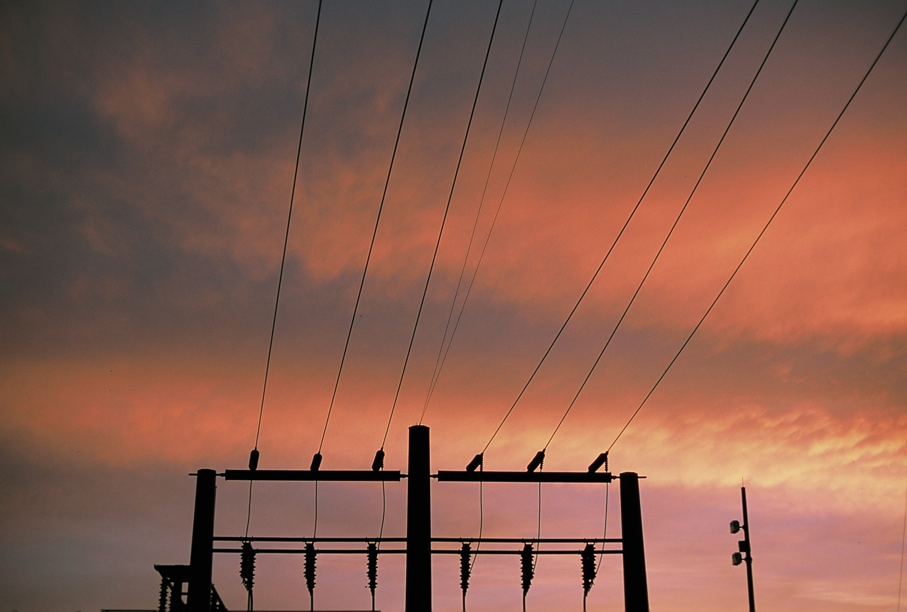
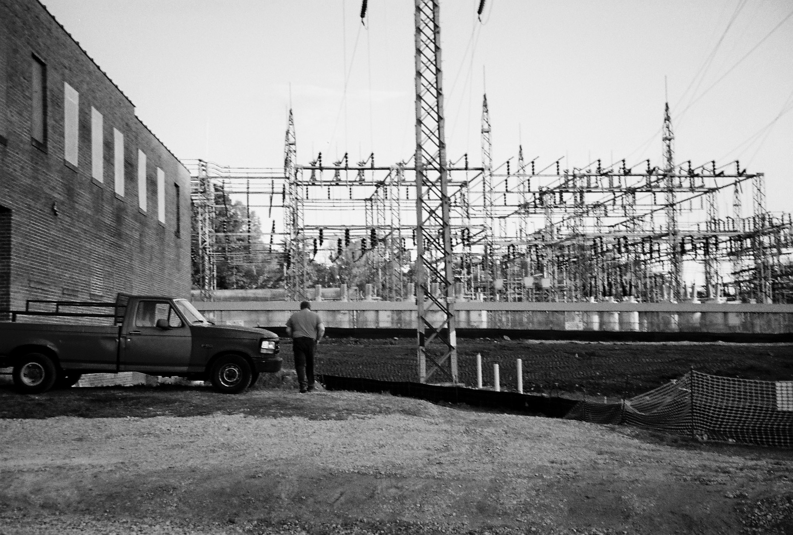

I live a few hundred feet from an electrical substation. The mere presence of electrical wires has introduced paranoia into my everyday life. Small disturbances in the environment that I once ignored have leached into my conscious thought. I wake up with a ringing in my ears and wonder if radiation from high-tension electrical wires has finally seeped through my skull. Across the street a massive construction project has begun. A sign advertises some faux-modern “life science workspace.” Another warns of asbestos exposure. There’s an opening to the building about 50 feet from my front porch- have I been exposed?
"Have I raised him, unwittingly in the vicinity of a chemical dump site, in the path of air currents that carry industrial wastes capable of producing scalp degeneration, glorious sunsets? (People say the sunsets around here were not nearly so stunning thirty or forty years ago.)"


I think this sense of paranoia was seeded growing up in northeast New Jersey. Anyone who has driven past the smokestacks by exit 13 on the Jersey Turnpike (or watched the opening credits of The Sopranos) has a good sense of the region’s industrial roots. I spent my childhood a good 15 miles northwest of these chemical plants and oil refineries, so it was something that rarely entered conscious thought. Yet pollution can shape environments in very subtle ways. Rivers aren’t safe for swimming, childhood asthma is a bit more prevalent, cancer cases aren’t always genetic. My grandmother told me about people she knows who died young from cancer after growing up playing near the Hudson Meadows—an area once home to an oil reprocessing plant that dumped millions of gallons of toxic waste into the wetlands of the Passaic River.
The situation in my neighborhood is far less severe than toxic waste poisoning. But I worry for the children who have grown up on my street and the men who work on the power station and at the construction site. Like the protagonists of my grandmother’s stories, the impact on their health and vitality is purely hypothetical. It exists only in the minds of those who may have been exposed—an often unperceivable source of anxiety that may or may not amount to anything.
“Fire and explosion were not the inherent dangers here. This death would penetrate, seep into genes, show itself in bodies not yet born”
